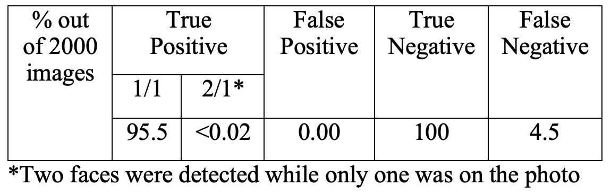

Facial recognition technology is rapidly advancing globally, finding applications ranging from unlocking smartphones to identifying individuals in public spaces. However, integrating this technology into our daily lives requires careful consideration of both technical and ethical aspects. We need to ensure that it aligns effectively with the contemporary world. In order to demonstrate the feasibility of implementing facial recognition systems and highlight their efficiency in face identification, we propose the implementation of an algorithm that utilizes a webcam to capture 2D facial images for recognition purposes. This endeavor aims to showcase that the implementation of such technology is not overly complex and can facilitate swift facial identification.
Started in the early 60’s in secret, research about facial recognition has quickly evolved and found important usage in our daily lives.
In the early days facial recognition didn’t even use computing methods, it was only an assembly of manual measurements between different facial points. This identification technique evolved in parallel with Artificial intelligence and deep learning improvement, leading to quicker and better identification relying on more features.
Today, thanks to improved hardware, facial recognition can be used on a wide range of hardware such as computers, drones, or cameras. It uses a wide range of technologies such as Haar or thermal images to extract features. However, this emerging technology is increasingly raising ethical and security issues.
Thales is working on facial recognition technology for airport use. By utilizing smart gates and biometric passports, it aims to expedite identity checks with advanced algorithms. However, concerns arise regarding data storage, privacy, age-related changes, and cosmetic surgery. The algorithm must consider unchangeable variables to ensure effectiveness and address these concerns.
Apple has made significant progress in integrating facial recognition into our daily lives through Face ID. This advanced technology combines hardware and software to enhance facial recognition accuracy, with an error rate of one in a million. By utilizing various sensors, including an IR camera, Apple creates a detailed 3D facial map and precise 2D mapping. In terms of ethics and security, Apple ensures that all biometric data is stored only on the device itself. Additionally, Apple has implemented an attention awareness feature that requires the user to actively look at the phone to unlock it, reducing the risk of unauthorized access through forced unlocking methods.
The proliferation of CCTV, facial recognition, and machine learning has increased surveillance capabilities for law enforcement. While it aids security, concerns arise regarding privacy, bias, and ethical implications. Some tech companies have restricted sales of facial recognition data to address these concerns, but its effectiveness remains uncertain. The use of such technology raises fundamental questions about its necessity and accuracy.
The US Army has partnered with RealNetworks to develop autonomous drones with facial recognition capabilities for intelligence and surveillance missions. The technology aims to minimize risks to human life and enhance operational efficiency. However, ethical concerns arise regarding the potential future use of armed drones and their autonomous decision-making capabilities. The question of whether a drone should have the authority to kill based on facial recognition identification raises significant ethical considerations. The broader issue lies in the potential consequences, both positive and negative, that could arise from the development and deployment of facial recognition technology in military contexts.
Upon initial observation, there are a huge number of facial recognition algorithms and methods. They are all more or less complex, have different learning methods and retain data for varying lengths of time. As part of this project for the GE2340 course, we chose to show how to implement a facial recognition algorithm on your computer. For our approach, we selected the Viola-Jones Face Detection Technique, also known as Haar Cascade, for two reasons: first, it's an extremely efficient algorithm and, second, it fully meets the ethical concerns we had in mind.
let's talk about the Haar Cascades facial recognition method. This method uses machine learning, and its "cascade" function is trained on images that are positive as well as negative. This algorithm is based on Haar feature, we can define simple ones: Edge features, Line features, and Four-rectangle features (Image 1) are our three primary Haar features that we use to do this. So, one of the first steps in our project was to code these features.
Subtracting the total of the pixels beneath the black and white portions from the total of the pixels under the white portion yields a unique value.
We must first determine the amounts under the black and white squares in order to see the difference. This is where the concept of "integral images" is introduced. Consequently, a picture is created, with the sum of the pixels in the top left corner at each location. In order, to get the sum of pixels from an area, we only need to access four value of the integral image (Image 2).
This is the second major challenge of our project, coding the concept of image integral and generating the image of the pixel sum set.
It frequently happens that the results of computations are not used because they are not useful. However, our algorithm does not currently know which values to retain; we do. Next, we present the concept of "Adaboost". In order to find the optimal threshold for categorizing into positive (face present) and negative (no face) categories, we must apply each feature to our training photos (face or not face). Only the features with the lowest error rates are chosen in an effort to minimize mistakes and misclassifications. These characteristics help to distinguish a face. It's a more involved process. At the start, each image has the same weight. Photos with bad classifications are given additional weight after each classification. After then, the same process is repeated. Error rates are now calculated. Additionally, new weight measurements are acquired. Until the desired accuracy or error rate is reached, or until the necessary number of features is identified, the process is repeated. A weighted sum of the weak classifiers creates the final classifier. The significant issue of efficiency now arises. The idea of a "Cascade of Classifiers" has been presented. We will no longer use every feature on a single window. Each characteristic will be categorized into a classifier stage, which will be applied sequentially. This effectively says that we won't move on to the second step if the first is not validated. When there is nothing to do with the person's face in the image window, this saves a significant amount of time. But for this step system to function correctly, phase one characteristics need to be laxer than phase two characteristics, and so forth. We've only coded the function that retrieves feature values regardless of their location in an image.
The following notebook present the code to compute all the previous algorithm presented
After implementing the face detection solution on one of our computers, we tested it to see how effective it was, and to derive some numerical values.
We used a model provided by OpenCV, which specializes in face recognition. It is, of course, based on Haar Cascades, and we used the parts of the code reworked by our group: haar features, image integral and feature value retrieval. On the other hand, having selected a model, and even though we hadn't trained it ourselves, we decided to test it to verify the figures we'd read about in the Haar Cascades facial recognition method research paper.
We made one code base on OpenCV to place a rectangle around the face `webcam.py`.
To test the algorithm, we selected an image dataset comprising a thousand face images from celebA face and a thousand images composed of furniture and animals. After running the method on the 2000 images (`folder.py`), we obtained forty-five false negatives, zero false positives and eighteen double positives (two faces found on an image, the correct face from the photo and a square that is not a face). False negatives are considered serious because they are misleading, whereas double positives are less serious because they identify the face in the photo.
To test the robustness of the solution, we carried out several different tests. The first test consists in generating two thousand images of the same size as the photos. These images are composed of random pixels.
In pairs, we merge a photo from the test dataset with a randomly generated photo. We then run the method on this new batch of images.
We tried to use Haar face recognition with different modification (bluring or rotating)
Blur = 15, rotation = 0
Blur = 30, rotation = 0
Blur = 0, rotation = 15
Blurring at 15 has so little impact on the results that it's negligible, and blurring at 30 changes the results, but the method is still able to identify the images. There are just more situations in which it detects two faces instead of one.
Rotating an image really impacts the results, as the method scans horizontally and therefore can't deal with faces that aren't straight.
Facial recognition is a very broad field of computer vision, with many different approaches possible, both in terms of software and hardware, or both. Each of these methods has its advantages and disadvantages, whether in terms of computational resources or training datasets, or in ethical terms. For this project, we decided to re-implement and test a method based on Haar Cascades. We were able to highlight the robustness of this method, despite its very simple technical foundations based on sums and products, by using various optimization methods such as integral images and Adaboost applied on a cascade of weak classifiers.